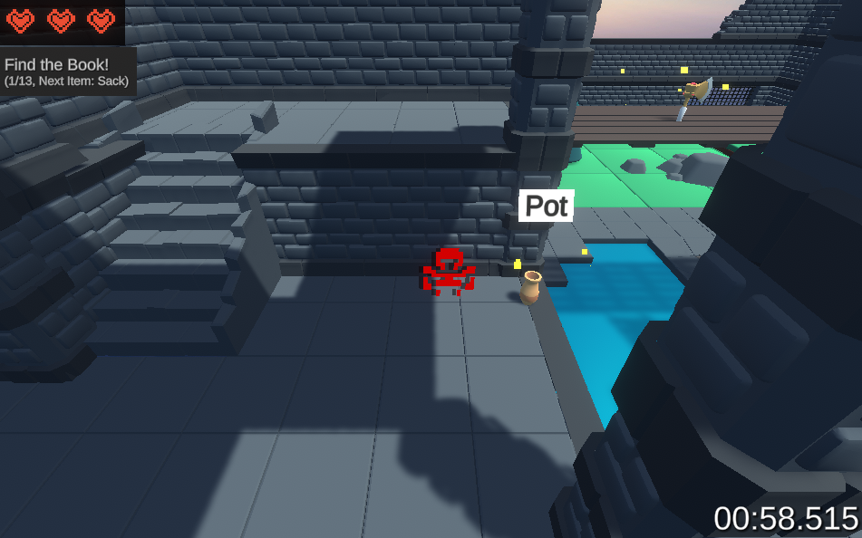

Scavenger Showdown

Together with a group of friends we competed in the 2021 Global Game Jam where we had 48 hours to make a game based on a "Lost and Found" theme.
This was done in Unity and my main roles were the combat and the main menu UI.
Scavenger Showdown is a multiplayer competitive collectathon party game for up to 4 players.
Whoever can find the objects scattered randomly around the map in a specific order wins.
This gameplay is enhanced with the addition of a combat system between players where you can send any rival back to the start,
losing them time. A singleplayer mode is also available, where players face the clock to achieve a low time.
Find more here!